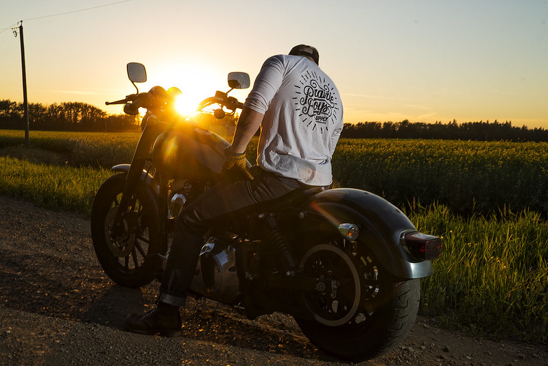

Introduction
Harley-Davidson is one of the most famous and best selling motorcycle manufacturers in the world. The company withstood the Great Depression, Two World Wars and organizational turmoil. Let us explore how this tiny start-up became an American icon.
Birth
The name Harley-Davidson stems from three brothers and their friend living in Milwaukee, Wisconsin. The group started building a motorized bicycle in 1901. This first attempt failed, but a second try proved successful and hit the road in 1904.
In 1905, the small company worked out of the Davidson brothers' shed. They sold barebone single-cylinder engines and a handful of completed motorcycles. But, the year after, Harley-Davidson grew more successful and even opened a designated factory.
Developments to the engine
In 1907, Harley-Davidson was among the first companies that build a V-Twin engine into their product. The V-Twin is a two-cylinder engine that you still see on modern motorcycles.

A V-Twin engine by Indian Motorcycle | V angles vary per company - and sometimes per model.
The initial V-Twin that Harley-Davidson made in 1907 has the same 45-degree angle as their modern blocks.
Initial Success
Harley-Davidson's success and revenue grew. They had become a notable competitor and frequently outperformed other brands on the racetrack.
With success came upgrades to the production line, enabling the company could keep up with demand.
#Fun Fact: The US government issued 20.000 Harley-Davidsons during World War I
Global disaster
Harley-Davidson had become the largest motorcycle manufacturer in the world, selling over 20.000 vehicles each year. But, sales rapidly declined from 1930 onwards, when the Great Depression hit the USA.
Not long after the Great Depression, the world was swept by a second World War. The US- and Canadian government both issued Harleys for their war efforts. Their army issue motorcycles were called the WLA and the WLC respectively. They are colloquially also known as 'The Liberator'.
Organizational turmoil
AMF (American Machine and Foundry) bought Harley Davidson in 1969. What followed were notorious years of inferior end products and a rebelling laborforce. After Harley-Davidson nearly went bankrupt, AMF was bought out by its own investors. Among those 13 buyers was founder William Davidson's grandson.
Under this group, Harley-Davidson regained success and reputation. The new leadership ensured Harley-Davidson retained its unique retro Americana and 'Chopper' style. Harley-Davidson is yet again a strong company, has been able to sell more products overseas and sustain its iconic American brand.

Legacy
When one thinks of a Harley-Davidson, one does not merely think of a profitable company, but about the unique product it makes, the history that it traversed and the worldwide fan base that blindly supports it.
Harley-Davidson's legacy reaches so far, that it may be one of the strongest brands a company has ever produced. It is a brand ingrained in American history and has, in some sense, ascended into an international cult. Indeed, there are so many Harley-Davidson clubs across the world that help foster the brand's reputation.
A concrete example of Harley-Davidson's legacy is the film Easy Rider from 1969. It is about two friends touring on 'Route 66'.